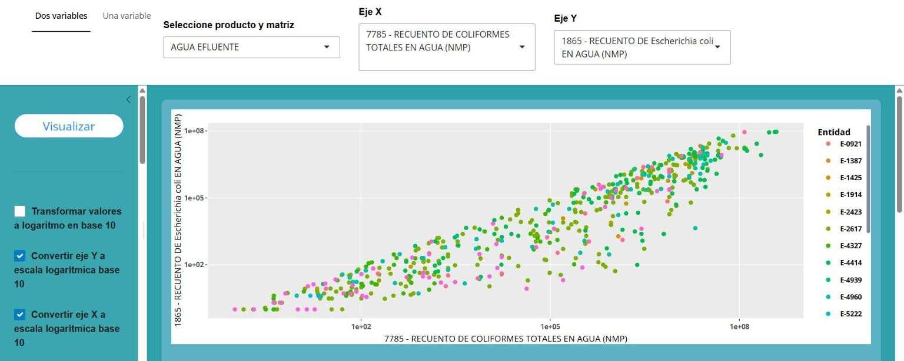

A Shiny Application for Data Visualization
Visualizes environmental and food safety lab results across 24 sample types with interactive scatter plots, histograms and a full analyte correlation table. Filter by client, adjust axes and add reference lines. Runs entirely in your browser via Shinylive (may take a moment to load). All data shown are synthetic.